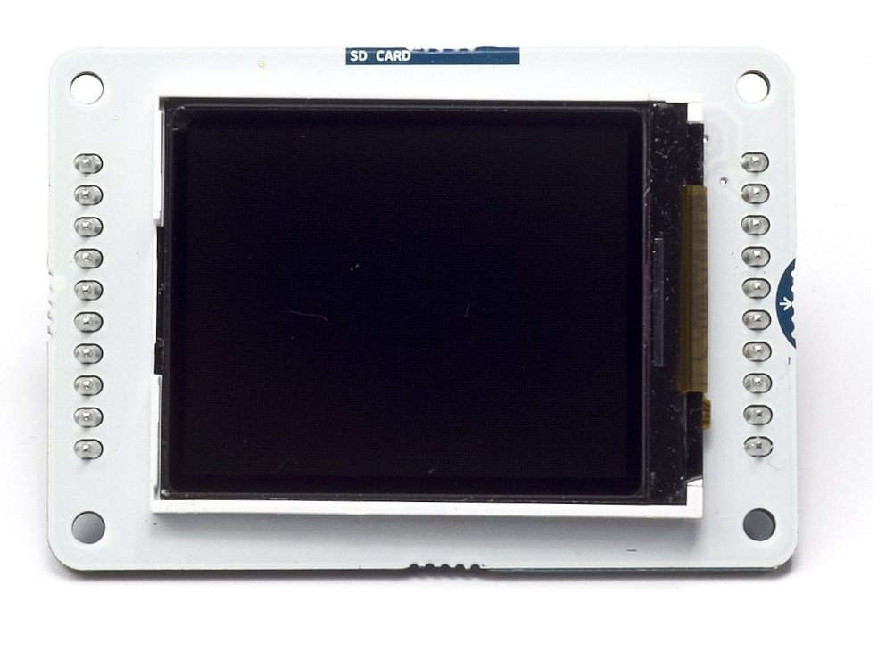
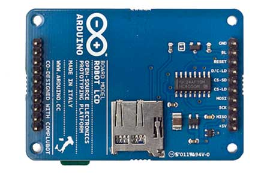
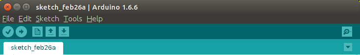
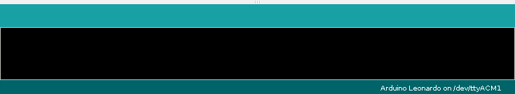

Using The LCD Screen
In this section, we will build the circuit that connects the LCD screen to
the Arduino, and learn how to program the screen to display different
shapes, colours and text.
Building The Circuit
We will be using the Arduino LCD module as our screen. You can find more
information on the screen
here,
and we will show you how to wire it up properly below.


The wiring diagram for the screen is shown below. It assumes you are using
an Arduino Leonardo board. The breadboards we are using are slightly bigger
than the one shown, but that's okay. As long as you get the right wires in
the right place!
Checking The Circuit
To check we have connected the screen properly, lets run a small "Hello
World!" program. Open up your Arduino software, and use the code supplied
below to check it works.

{% highlight C linenos %}
#include // Arduino LCD library
#include
// pins to control the screen
#define CS 7
#define DC 0
#define RST 1
// create an instance of the library
TFT TFTscreen = TFT(CS, DC, RST);
// Use this to count upwards forever.
int counter = 0;
void setup() {
// Put this line at the beginning of every sketch that uses the GLCD:
TFTscreen.begin();
// clear the screen with a white background
TFTscreen.background(255,255,255);
// set the font color to black
TFTscreen.stroke(0, 0, 0);
// set the font size
TFTscreen.setTextSize(2);
// ste the font size very large for the loop
TFTscreen.setTextSize(5);
}
void loop() {
// Write hello world to the screen.
TFTscreen.text("Hello World!", 1, 20);
// Print out the counter number.
TFTscreen.text(String(counter), 40);
// wait for a moment then loop back round.
delay(250);
counter = counter + 1;
}
{% endhighlight %}

Hit Upload again, and hopefully, you will see the words
"Hello World!" appear on your screen.
Programming The Screen
Now we will learn to program the screen and actually draw interesting stuff
on it.
The code below goes through a bunch of different examples, and shows you the
different things the screen you can do. Complex things can be drawn from lots
of simple things, and you can build them into a full game. Try copying the
code below and seing how it behaves when you run it. Once you think you know
how each bit works, change things and see how it effects what gets displayed.
This is called Hacking!
{% highlight C linenos %}
// Code Goes Here
//
// Example hello world text on the screen.
{% endhighlight %}
Now you feel comfortable using the screen and the code to control it, lets
move on to making our screen interactive. This will involve buttons, knobs,
circuits and a little more code...
< Getting Started |
Buttons and Dials >